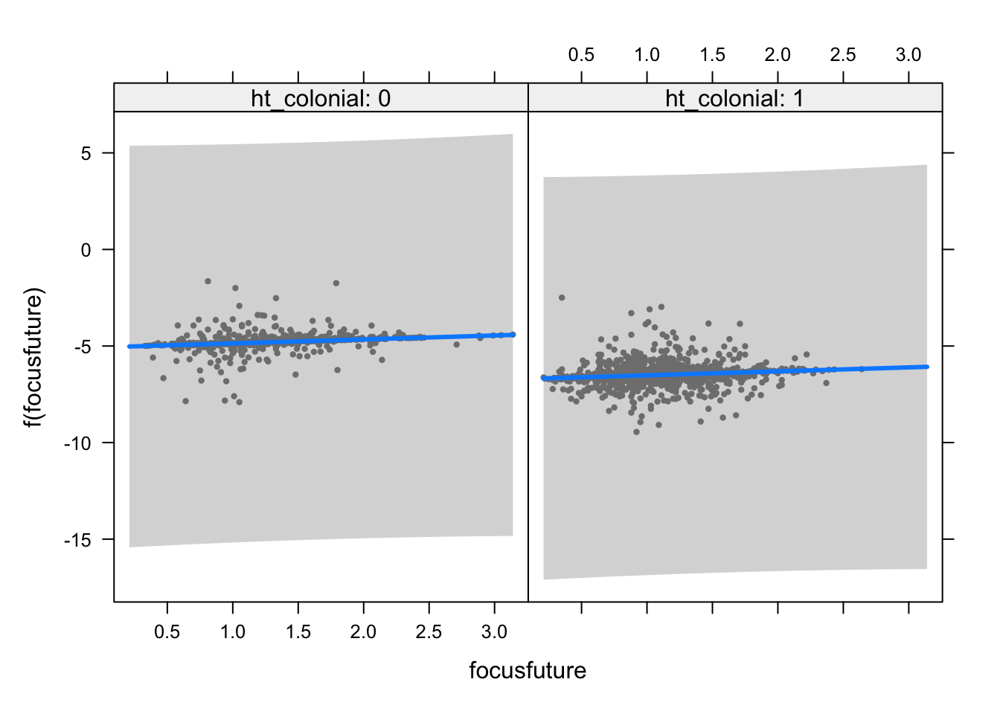
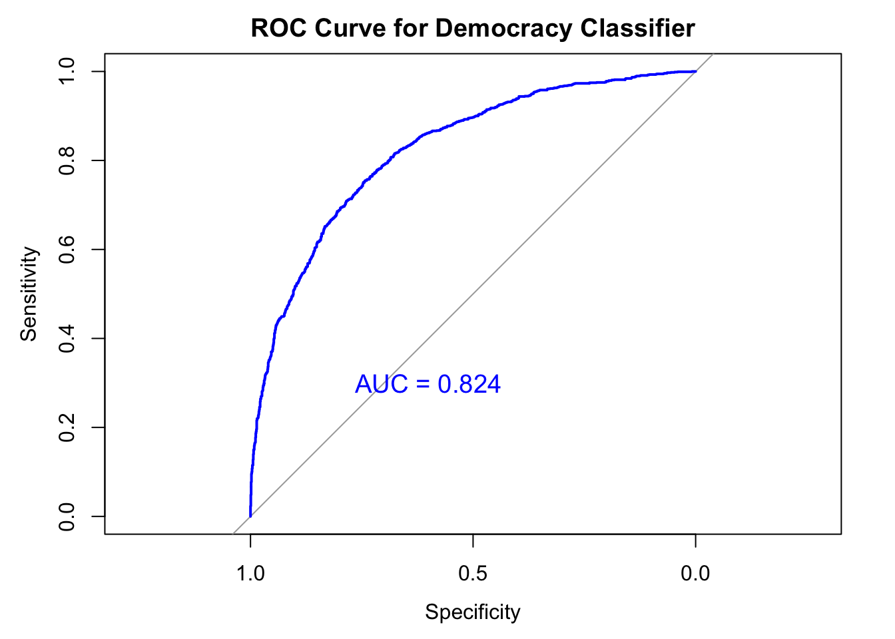
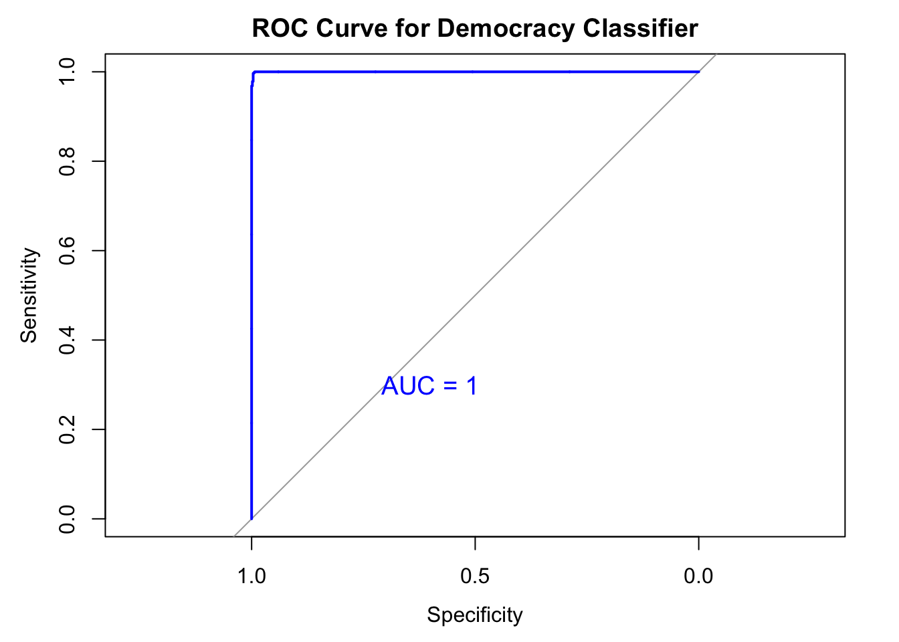
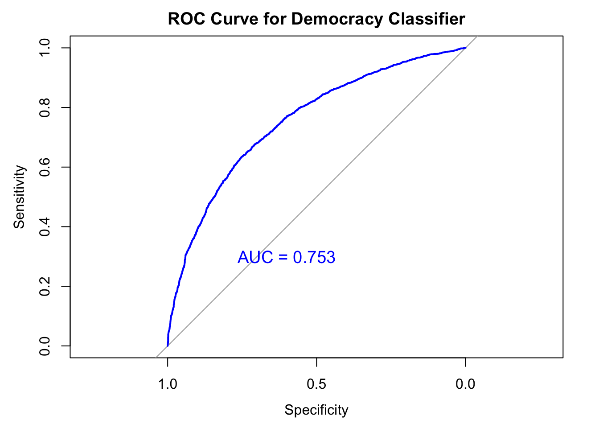
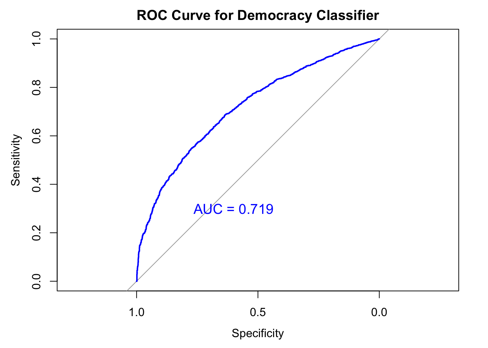
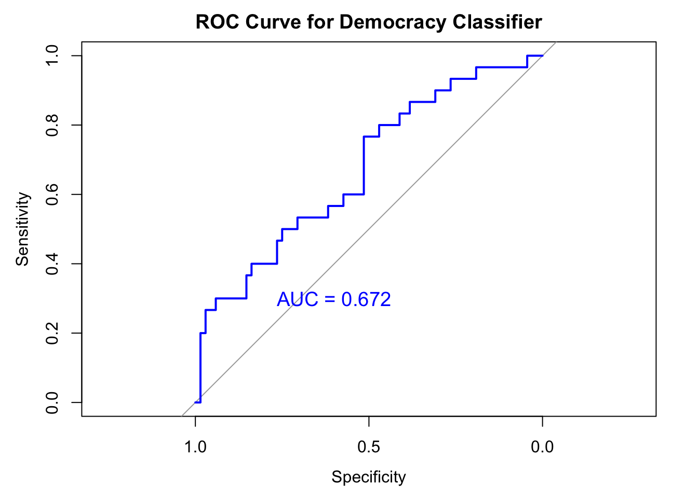
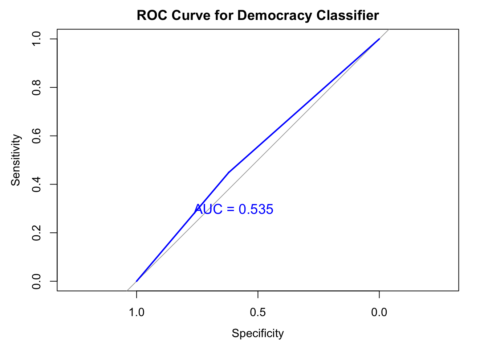

liwc_df <- liwc_df %>%
mutate(sovereignty = ifelse(str_detect(text, "sovereignty"), 1, 0),
intervention = ifelse(str_detect(text, "intervention"), 1, 0),
human_rights = ifelse(str_detect(text, "human rights"), 1, 0)) %>%
mutate(sovereignty_count = str_count(text, "sovereignty"),
intervention_count = str_count(text, "intervention"),
human_rights_count = str_count(text, "human rights"))liwc_modeling
Introduction
In this project, I use linguistic features of state representatives’ speech transcripts from the United Nations General Debate Corpus (UNGDC) to predict the regime type. The goal is twofold. First, we aim at running a hard test for a hypothesis that countries identified with distinct regime types show different linguistic styles. If I can predict the speaker’s regime type based on linguistic features, it is a strong indication of the difference in linguistic features across regime types. Second, this project analyzes key linguistic features that act as a strong signal of the state’s regime type. I further interpret substantive implication of strong coefficients and check how consistent their degrees of significance are across the models. This script uses the scores of LIWC features and merges with country-year level meta data. "data/raw/controls/controls.csv" has a battery of country-year level variables that might potentially confound the statistical modeling. With liwc_meta dataset, at the country-year level, I run a series of statistical models that probe the relationship between linguistic features and sentiment scores of that speech. To preview, LIWC features alone have a strong predictive power on regime types, even without the help of meta data.
I test whether there is a correlation between a country’s invocation of international legal norms and the regime type. Among many, I generate three key legal principles that are prominent throughout the history of international politics. These are principle of sovereignty, principle of non-intervention, and the principle of human rights. Binary variables capture whether each principle was invoked, and count variables measure the number of time it was mentioned within one speech.
Variables on legal norms
- Three binary variables:
sovereignty,intervention, andhuman_rights. These are coded 1 when detected at least one time during the speech, 0 otherwise. - Three count variables:
sovereignty_count,intervention_count,human_rights_count. These variables are the number of keywords appearing during the speech.
Statistical Modeling
Using random effects model when the unit-specific intercepts have correlation with the input variables, and eventually lead to omitted variable bias. I suspect this would not be the case, as the linguistic features (inputs) often have high correlation with time invariant characteristics of countries. However, there does not exist a consistent theoretical conjecture on the correlation between these two. To accommodate such uncertainty, we also supplement the result by using fixed effects model.
Model 0: pooled model with LIWC features
plm package does not allow a dot feature ( y ~ . ) which selects all the columns except for the specified dependent variable. In order to avoid manual entry of all the LIWC features, I use a function called “expand_formula” from a StackOverflow.
"
Input: dependent variable in a character form, names of the input features
Output: formula ready to be used for plm package.
Example: expand_formula(output ~ .,names(data))
output ~ x1 + x2 + ... + xn
"[1] "\n Input: dependent variable in a character form, names of the input features\n Output: formula ready to be used for plm package. \n Example: expand_formula(output ~ .,names(data)) \n output ~ x1 + x2 + ... + xn\n "expand_formula <-
function(form="A ~.",varNames=c("A","B","C")){
has_dot <- any(grepl('.',form,fixed=TRUE))
if(has_dot){
ii <- intersect(as.character(as.formula(form)),
varNames)
varNames <- varNames[!grepl(paste0(ii,collapse='|'),varNames)]
exp <- paste0(varNames,collapse='+')
as.formula(gsub('.',exp,form,fixed=TRUE))
}
else as.formula(form)
}- I create separate blocks of variables to adjust inclusion of metadata for later analyses.
liwc_df<-liwc_df%>%
rename("function_feature" = "function")
liwc_df <- liwc_df[liwc_df$year < 2021, ]
validation <- liwc_df[liwc_df$year >= 2021, ]
print(dim(liwc_df))[1] 10181 191liwc_inputs<-liwc_df[, 5:122]
id <- liwc_df[, 1:3]
y <- liwc_df[, 149]
controls <- liwc_df[, c(126:148, 150:191)]
data <- cbind(y, id, liwc_inputs)
data_controls<- cbind(y, id, liwc_inputs, controls)
controls_only<- cbind(y, id, controls)Result of statistical analysis
To supplement machine-learning approach of regression, I present a set of conventional statistical tests accounting for error correlation.
model <-plm(expand_formula("dd_democracy ~. ", names(data)),
data = data,
index = c("ccode_iso", "year"),
model = "within"
)
# standard error clustered by both time and group.
model_cluster_twoway <- kable(
tidy(coeftest(model, vcov=vcovDC(model, type="sss",
caption= "Pooled model with cluster robust standard errors"))))Warning in sqrt(diag(se)): NaNs produced# standard error clustered by time.
model_cluster_time<- kable(
tidy(coeftest(model, vcov=vcovHC(model, type="sss", cluster="time"),
caption = "Pooled model with clustering around time")))
# standard error clustered by country
model_cluster_country <- kable(
tidy(coeftest(model, vcov=vcovHC(model, type="sss", cluster="group"),
caption = "Pooled model with clustering around country")))
model_summary <- modelsummary(
model,
stars = TRUE,
vcov = list(
vcovDC(model, type = "sss"),
vcovHC(model, type = "sss", cluster = "time"),
vcovHC(model, type = "sss", cluster = "group")
),
caption = "Pooled model with different types of standard errors",
output = "kableExtra",
escape = FALSE
)
model_summary %>%kable_classic("hover",
full_width=F,
html_font = "Cambria")%>%
scroll_box(width = "100%", height = "400px")| (1) | (2) | (3) | |
|---|---|---|---|
| year1951 | −0.045 | −0.045 | −0.045 |
| (0.059) | (0.059) | (0.059) | |
| year1952 | 0.041 | 0.041 | 0.041 |
| (0.062) | (0.062) | (0.062) | |
| year1953 | 0.010 | 0.010 | 0.010 |
| (0.061) | (0.061) | (0.061) | |
| year1954 | 0.003 | 0.003 | 0.003 |
| (0.062) | (0.062) | (0.062) | |
| year1955 | 0.002 | 0.002 | 0.002 |
| (0.062) | (0.062) | (0.062) | |
| year1956 | −0.039 | −0.039 | −0.039 |
| (0.056) | (0.056) | (0.056) | |
| year1957 | −0.072 | −0.072 | −0.072 |
| (0.055) | (0.055) | (0.055) | |
| year1958 | −0.045 | −0.045 | −0.045 |
| (0.055) | (0.055) | (0.055) | |
| year1959 | −0.040 | −0.040 | −0.040 |
| (0.055) | (0.055) | (0.055) | |
| year1960 | −0.009 | −0.009 | −0.009 |
| (0.055) | (0.055) | (0.055) | |
| year1961 | 0.017 | 0.017 | 0.017 |
| (0.055) | (0.055) | (0.055) | |
| year1962 | −0.014 | −0.014 | −0.014 |
| (0.053) | (0.053) | (0.053) | |
| year1963 | −0.061 | −0.061 | −0.061 |
| (0.053) | (0.053) | (0.053) | |
| year1964 | −0.046 | −0.046 | −0.046 |
| (0.053) | (0.053) | (0.053) | |
| year1965 | −0.050 | −0.050 | −0.050 |
| (0.053) | (0.053) | (0.053) | |
| year1966 | −0.067 | −0.067 | −0.067 |
| (0.054) | (0.054) | (0.054) | |
| year1967 | −0.077 | −0.077 | −0.077 |
| (0.053) | (0.053) | (0.053) | |
| year1968 | −0.107* | −0.107* | −0.107* |
| (0.053) | (0.053) | (0.053) | |
| year1969 | −0.099+ | −0.099+ | −0.099+ |
| (0.053) | (0.053) | (0.053) | |
| year1970 | −0.061 | −0.061 | −0.061 |
| (0.056) | (0.056) | (0.056) | |
| year1971 | −0.078 | −0.078 | −0.078 |
| (0.052) | (0.052) | (0.052) | |
| year1972 | −0.080 | −0.080 | −0.080 |
| (0.051) | (0.051) | (0.051) | |
| year1973 | −0.098+ | −0.098+ | −0.098+ |
| (0.052) | (0.052) | (0.052) | |
| year1974 | −0.081 | −0.081 | −0.081 |
| (0.052) | (0.052) | (0.052) | |
| year1975 | −0.078 | −0.078 | −0.078 |
| (0.051) | (0.051) | (0.051) | |
| year1976 | −0.084 | −0.084 | −0.084 |
| (0.051) | (0.051) | (0.051) | |
| year1977 | −0.090+ | −0.090+ | −0.090+ |
| (0.051) | (0.051) | (0.051) | |
| year1978 | −0.074 | −0.074 | −0.074 |
| (0.051) | (0.051) | (0.051) | |
| year1979 | −0.065 | −0.065 | −0.065 |
| (0.051) | (0.051) | (0.051) | |
| year1980 | −0.048 | −0.048 | −0.048 |
| (0.051) | (0.051) | (0.051) | |
| year1981 | −0.044 | −0.044 | −0.044 |
| (0.051) | (0.051) | (0.051) | |
| year1982 | −0.062 | −0.062 | −0.062 |
| (0.051) | (0.051) | (0.051) | |
| year1983 | −0.016 | −0.016 | −0.016 |
| (0.051) | (0.051) | (0.051) | |
| year1984 | −0.015 | −0.015 | −0.015 |
| (0.051) | (0.051) | (0.051) | |
| year1985 | −0.052 | −0.052 | −0.052 |
| (0.052) | (0.052) | (0.052) | |
| year1986 | −0.025 | −0.025 | −0.025 |
| (0.052) | (0.052) | (0.052) | |
| year1987 | −0.031 | −0.031 | −0.031 |
| (0.052) | (0.052) | (0.052) | |
| year1988 | −0.016 | −0.016 | −0.016 |
| (0.052) | (0.052) | (0.052) | |
| year1989 | 0.007 | 0.007 | 0.007 |
| (0.052) | (0.052) | (0.052) | |
| year1990 | 0.054 | 0.054 | 0.054 |
| (0.052) | (0.052) | (0.052) | |
| year1991 | 0.052 | 0.052 | 0.052 |
| (0.052) | (0.052) | (0.052) | |
| year1992 | 0.086+ | 0.086+ | 0.086+ |
| (0.051) | (0.051) | (0.051) | |
| year1993 | 0.102* | 0.102* | 0.102* |
| (0.051) | (0.051) | (0.051) | |
| year1994 | 0.112* | 0.112* | 0.112* |
| (0.051) | (0.051) | (0.051) | |
| year1995 | 0.112* | 0.112* | 0.112* |
| (0.051) | (0.051) | (0.051) | |
| year1996 | 0.098+ | 0.098+ | 0.098+ |
| (0.052) | (0.052) | (0.052) | |
| year1997 | 0.079 | 0.079 | 0.079 |
| (0.052) | (0.052) | (0.052) | |
| year1998 | 0.065 | 0.065 | 0.065 |
| (0.052) | (0.052) | (0.052) | |
| year1999 | 0.080 | 0.080 | 0.080 |
| (0.052) | (0.052) | (0.052) | |
| year2000 | 0.082 | 0.082 | 0.082 |
| (0.052) | (0.052) | (0.052) | |
| year2001 | 0.107* | 0.107* | 0.107* |
| (0.053) | (0.053) | (0.053) | |
| year2002 | 0.094+ | 0.094+ | 0.094+ |
| (0.053) | (0.053) | (0.053) | |
| year2003 | 0.086+ | 0.086+ | 0.086+ |
| (0.052) | (0.052) | (0.052) | |
| year2004 | 0.089+ | 0.089+ | 0.089+ |
| (0.053) | (0.053) | (0.053) | |
| year2005 | 0.084 | 0.084 | 0.084 |
| (0.052) | (0.052) | (0.052) | |
| year2006 | 0.090+ | 0.090+ | 0.090+ |
| (0.052) | (0.052) | (0.052) | |
| year2007 | 0.089+ | 0.089+ | 0.089+ |
| (0.053) | (0.053) | (0.053) | |
| year2008 | 0.106* | 0.106* | 0.106* |
| (0.053) | (0.053) | (0.053) | |
| year2009 | 0.124* | 0.124* | 0.124* |
| (0.053) | (0.053) | (0.053) | |
| year2010 | 0.098+ | 0.098+ | 0.098+ |
| (0.053) | (0.053) | (0.053) | |
| year2011 | 0.112* | 0.112* | 0.112* |
| (0.053) | (0.053) | (0.053) | |
| year2012 | 0.144** | 0.144** | 0.144** |
| (0.053) | (0.053) | (0.053) | |
| year2013 | 0.120* | 0.120* | 0.120* |
| (0.053) | (0.053) | (0.053) | |
| year2014 | 0.135* | 0.135* | 0.135* |
| (0.053) | (0.053) | (0.053) | |
| year2015 | 0.137* | 0.137* | 0.137* |
| (0.054) | (0.054) | (0.054) | |
| year2016 | 0.118* | 0.118* | 0.118* |
| (0.053) | (0.053) | (0.053) | |
| year2017 | 0.147** | 0.147** | 0.147** |
| (0.053) | (0.053) | (0.053) | |
| year2018 | 0.109* | 0.109* | 0.109* |
| (0.053) | (0.053) | (0.053) | |
| year2019 | 0.116* | 0.116* | 0.116* |
| (0.054) | (0.054) | (0.054) | |
| year2020 | 0.119* | 0.119* | 0.119* |
| (0.060) | (0.060) | (0.060) | |
| WC | 0.000+ | 0.000+ | 0.000+ |
| (0.000) | (0.000) | (0.000) | |
| Analytic | 0.006*** | 0.006*** | 0.006*** |
| (0.002) | (0.002) | (0.002) | |
| Clout | 0.005* | 0.005* | 0.005* |
| (0.002) | (0.002) | (0.002) | |
| Authentic | 0.002 | 0.002 | 0.002 |
| (0.003) | (0.003) | (0.003) | |
| Tone | 0.001 | 0.001 | 0.001 |
| (0.001) | (0.001) | (0.001) | |
| WPS | −0.002*** | −0.002*** | −0.002*** |
| (0.000) | (0.000) | (0.000) | |
| BigWords | −0.004 | −0.004 | −0.004 |
| (0.003) | (0.003) | (0.003) | |
| Dic | −0.004 | −0.004 | −0.004 |
| (0.005) | (0.005) | (0.005) | |
| Linguistic | 0.024* | 0.024* | 0.024* |
| (0.010) | (0.010) | (0.010) | |
| function_feature | −0.037*** | −0.037*** | −0.037*** |
| (0.011) | (0.011) | (0.011) | |
| pronoun | 0.156 | 0.156 | 0.156 |
| (0.557) | (0.557) | (0.557) | |
| ppron | −0.220 | −0.220 | −0.220 |
| (0.558) | (0.558) | (0.558) | |
| i | 0.160*** | 0.160*** | 0.160*** |
| (0.039) | (0.039) | (0.039) | |
| we | 0.043 | 0.043 | 0.043 |
| (0.034) | (0.034) | (0.034) | |
| you | 0.040 | 0.040 | 0.040 |
| (0.039) | (0.039) | (0.039) | |
| shehe | 0.092* | 0.092* | 0.092* |
| (0.046) | (0.046) | (0.046) | |
| they | 0.040 | 0.040 | 0.040 |
| (0.032) | (0.032) | (0.032) | |
| ipron | −0.121 | −0.121 | −0.121 |
| (0.557) | (0.557) | (0.557) | |
| det | 0.004 | 0.004 | 0.004 |
| (0.007) | (0.007) | (0.007) | |
| article | 0.004 | 0.004 | 0.004 |
| (0.010) | (0.010) | (0.010) | |
| number | 0.002 | 0.002 | 0.002 |
| (0.009) | (0.009) | (0.009) | |
| prep | 0.010 | 0.010 | 0.010 |
| (0.009) | (0.009) | (0.009) | |
| auxverb | 0.038** | 0.038** | 0.038** |
| (0.014) | (0.014) | (0.014) | |
| adverb | 0.017+ | 0.017+ | 0.017+ |
| (0.009) | (0.009) | (0.009) | |
| conj | 0.026** | 0.026** | 0.026** |
| (0.009) | (0.009) | (0.009) | |
| negate | 0.055* | 0.055* | 0.055* |
| (0.022) | (0.022) | (0.022) | |
| verb | −0.012 | −0.012 | −0.012 |
| (0.012) | (0.012) | (0.012) | |
| adj | −0.024** | −0.024** | −0.024** |
| (0.009) | (0.009) | (0.009) | |
| quantity | 0.024** | 0.024** | 0.024** |
| (0.009) | (0.009) | (0.009) | |
| Drives | −0.099*** | −0.099*** | −0.099*** |
| (0.027) | (0.027) | (0.027) | |
| affiliation | 0.108*** | 0.108*** | 0.108*** |
| (0.028) | (0.028) | (0.028) | |
| achieve | 0.110*** | 0.110*** | 0.110*** |
| (0.026) | (0.026) | (0.026) | |
| power | 0.099*** | 0.099*** | 0.099*** |
| (0.027) | (0.027) | (0.027) | |
| Cognition | −0.036 | −0.036 | −0.036 |
| (0.049) | (0.049) | (0.049) | |
| allnone | −0.015 | −0.015 | −0.015 |
| (0.050) | (0.050) | (0.050) | |
| cogproc | 0.032 | 0.032 | 0.032 |
| (0.050) | (0.050) | (0.050) | |
| insight | 0.031 | 0.031 | 0.031 |
| (0.020) | (0.020) | (0.020) | |
| cause | 0.003 | 0.003 | 0.003 |
| (0.013) | (0.013) | (0.013) | |
| discrep | 0.008 | 0.008 | 0.008 |
| (0.021) | (0.021) | (0.021) | |
| tentat | 0.018 | 0.018 | 0.018 |
| (0.013) | (0.013) | (0.013) | |
| certitude | 0.003 | 0.003 | 0.003 |
| (0.015) | (0.015) | (0.015) | |
| differ | 0.037 | 0.037 | 0.037 |
| (0.024) | (0.024) | (0.024) | |
| memory | 0.038 | 0.038 | 0.038 |
| (0.058) | (0.058) | (0.058) | |
| Affect | −0.074 | −0.074 | −0.074 |
| (0.126) | (0.126) | (0.126) | |
| tone_pos | 0.050 | 0.050 | 0.050 |
| (0.128) | (0.128) | (0.128) | |
| tone_neg | 0.078 | 0.078 | 0.078 |
| (0.128) | (0.128) | (0.128) | |
| emotion | 0.095 | 0.095 | 0.095 |
| (0.120) | (0.120) | (0.120) | |
| emo_pos | −0.065 | −0.065 | −0.065 |
| (0.121) | (0.121) | (0.121) | |
| emo_neg | −0.143 | −0.143 | −0.143 |
| (0.126) | (0.126) | (0.126) | |
| emo_anx | 0.038 | 0.038 | 0.038 |
| (0.054) | (0.054) | (0.054) | |
| emo_anger | 0.040 | 0.040 | 0.040 |
| (0.048) | (0.048) | (0.048) | |
| emo_sad | 0.111+ | 0.111+ | 0.111+ |
| (0.057) | (0.057) | (0.057) | |
| swear | −0.077 | −0.077 | −0.077 |
| (0.207) | (0.207) | (0.207) | |
| Social | −0.017 | −0.017 | −0.017 |
| (0.012) | (0.012) | (0.012) | |
| socbehav | 0.031+ | 0.031+ | 0.031+ |
| (0.016) | (0.016) | (0.016) | |
| prosocial | 0.011 | 0.011 | 0.011 |
| (0.014) | (0.014) | (0.014) | |
| polite | −0.027 | −0.027 | −0.027 |
| (0.021) | (0.021) | (0.021) | |
| conflict | 0.012 | 0.012 | 0.012 |
| (0.021) | (0.021) | (0.021) | |
| moral | 0.014 | 0.014 | 0.014 |
| (0.015) | (0.015) | (0.015) | |
| comm | −0.023 | −0.023 | −0.023 |
| (0.015) | (0.015) | (0.015) | |
| socrefs | 0.009 | 0.009 | 0.009 |
| (0.020) | (0.020) | (0.020) | |
| family | −0.034 | −0.034 | −0.034 |
| (0.038) | (0.038) | (0.038) | |
| friend | −0.135+ | −0.135+ | −0.135+ |
| (0.077) | (0.077) | (0.077) | |
| female | 0.025 | 0.025 | 0.025 |
| (0.027) | (0.027) | (0.027) | |
| male | −0.025 | −0.025 | −0.025 |
| (0.026) | (0.026) | (0.026) | |
| Culture | −0.396+ | −0.396+ | −0.396+ |
| (0.230) | (0.230) | (0.230) | |
| politic | 0.407+ | 0.407+ | 0.407+ |
| (0.230) | (0.230) | (0.230) | |
| ethnicity | 0.435+ | 0.435+ | 0.435+ |
| (0.229) | (0.229) | (0.229) | |
| tech | 0.387+ | 0.387+ | 0.387+ |
| (0.231) | (0.231) | (0.231) | |
| Lifestyle | −0.001 | −0.001 | −0.001 |
| (0.030) | (0.030) | (0.030) | |
| leisure | −0.068 | −0.068 | −0.068 |
| (0.043) | (0.043) | (0.043) | |
| home | 0.077 | 0.077 | 0.077 |
| (0.054) | (0.054) | (0.054) | |
| work | 0.015 | 0.015 | 0.015 |
| (0.029) | (0.029) | (0.029) | |
| money | 0.017 | 0.017 | 0.017 |
| (0.026) | (0.026) | (0.026) | |
| relig | 0.008 | 0.008 | 0.008 |
| (0.035) | (0.035) | (0.035) | |
| Physical | 0.025 | 0.025 | 0.025 |
| (0.022) | (0.022) | (0.022) | |
| health | 0.015 | 0.015 | 0.015 |
| (0.034) | (0.034) | (0.034) | |
| illness | −0.019 | −0.019 | −0.019 |
| (0.043) | (0.043) | (0.043) | |
| wellness | −0.006 | −0.006 | −0.006 |
| (0.066) | (0.066) | (0.066) | |
| mental | −0.008 | −0.008 | −0.008 |
| (0.127) | (0.127) | (0.127) | |
| substances | −0.017 | −0.017 | −0.017 |
| (0.096) | (0.096) | (0.096) | |
| sexual | −0.002 | −0.002 | −0.002 |
| (0.051) | (0.051) | (0.051) | |
| food | 0.033 | 0.033 | 0.033 |
| (0.034) | (0.034) | (0.034) | |
| death | −0.042 | −0.042 | −0.042 |
| (0.042) | (0.042) | (0.042) | |
| need | −0.017 | −0.017 | −0.017 |
| (0.012) | (0.012) | (0.012) | |
| want | −0.014 | −0.014 | −0.014 |
| (0.026) | (0.026) | (0.026) | |
| acquire | −0.047* | −0.047* | −0.047* |
| (0.024) | (0.024) | (0.024) | |
| lack | 0.076** | 0.076** | 0.076** |
| (0.025) | (0.025) | (0.025) | |
| fulfill | 0.020 | 0.020 | 0.020 |
| (0.027) | (0.027) | (0.027) | |
| fatigue | 0.488* | 0.488* | 0.488* |
| (0.201) | (0.201) | (0.201) | |
| reward | 0.053* | 0.053* | 0.053* |
| (0.023) | (0.023) | (0.023) | |
| risk | −0.005 | −0.005 | −0.005 |
| (0.012) | (0.012) | (0.012) | |
| curiosity | −0.053* | −0.053* | −0.053* |
| (0.024) | (0.024) | (0.024) | |
| allure | 0.006 | 0.006 | 0.006 |
| (0.007) | (0.007) | (0.007) | |
| Perception | 0.065* | 0.065* | 0.065* |
| (0.028) | (0.028) | (0.028) | |
| attention | −0.070* | −0.070* | −0.070* |
| (0.032) | (0.032) | (0.032) | |
| motion | −0.057+ | −0.057+ | −0.057+ |
| (0.030) | (0.030) | (0.030) | |
| space | −0.062+ | −0.062+ | −0.062+ |
| (0.032) | (0.032) | (0.032) | |
| visual | −0.049 | −0.049 | −0.049 |
| (0.032) | (0.032) | (0.032) | |
| auditory | −0.016 | −0.016 | −0.016 |
| (0.054) | (0.054) | (0.054) | |
| feeling | −0.072+ | −0.072+ | −0.072+ |
| (0.041) | (0.041) | (0.041) | |
| time | −0.012 | −0.012 | −0.012 |
| (0.017) | (0.017) | (0.017) | |
| focuspast | −0.006 | −0.006 | −0.006 |
| (0.009) | (0.009) | (0.009) | |
| focuspresent | −0.010 | −0.010 | −0.010 |
| (0.009) | (0.009) | (0.009) | |
| focusfuture | 0.009 | 0.009 | 0.009 |
| (0.011) | (0.011) | (0.011) | |
| Conversation | 0.627 | 0.627 | 0.627 |
| (0.631) | (0.631) | (0.631) | |
| netspeak | −0.726 | −0.726 | −0.726 |
| (0.605) | (0.605) | (0.605) | |
| assent | −0.641 | −0.641 | −0.641 |
| (0.626) | (0.626) | (0.626) | |
| nonflu | 1.015 | 1.015 | 1.015 |
| (0.910) | (0.910) | (0.910) | |
| filler | −5.699 | −5.699 | −5.699 |
| (3.623) | (3.623) | (3.623) | |
| AllPunc | 0.551 | 0.551 | 0.551 |
| (0.405) | (0.405) | (0.405) | |
| Period | −0.542 | −0.542 | −0.542 |
| (0.406) | (0.406) | (0.406) | |
| Comma | −0.556 | −0.556 | −0.556 |
| (0.406) | (0.406) | (0.406) | |
| QMark | −0.509 | −0.509 | −0.509 |
| (0.407) | (0.407) | (0.407) | |
| Exclam | −0.749+ | −0.749+ | −0.749+ |
| (0.422) | (0.422) | (0.422) | |
| Apostro | −0.611 | −0.611 | −0.611 |
| (0.406) | (0.406) | (0.406) | |
| OtherP | −0.553 | −0.553 | −0.553 |
| (0.406) | (0.406) | (0.406) | |
| Num.Obs. | 9646 | 9646 | 9646 |
| R2 | 0.191 | 0.191 | 0.191 |
| R2 Adj. | 0.159 | 0.159 | 0.159 |
| AIC | 2036.9 | 2036.9 | 2036.9 |
| BIC | 3385.7 | 3385.7 | 3385.7 |
| RMSE | 0.26 | 0.26 | 0.26 |
| Std.Errors | Custom | Custom | Custom |
| + p |
Prediction regression and cross valication
Separate test data from validation set.
Take out the test data set (just a few years) and then split for th e validation data. In my dataset, I carve out observations from two years (2021 and 2022) as my test data.
Within the test data, I split the data in to two groups: pre and post Cold War with a threshold of 1990. I create several models based on the pre-Cold War era and generate model evaluation metrics by applying the models to the post Cold War era.
Experiment 1: Random CV
This includes both country level meta data and LIWC features. I split the training and testing dataset randomly.
data_controls$ccode_iso<-as.factor(data_controls$ccode_iso)
# Remove the country variable from the training data
data_controls <- data_controls[, !(names(data_controls) %in% c("ccode_iso", "year", "session", "dd_regime"))]
data_controls <- data_controls[, !(names(data_controls) %in% c("democracy"))]
data_controls<-data_controls%>%dplyr::select(-Segment)
set.seed(1)
data_controls$dd_democracy<-as.factor(data_controls$dd_democracy)
split <- rsample::initial_split(data_controls, prop = 0.7)
trainN <- rsample::training(split)
testN <- rsample::testing(split)
model0 <- glm(
formula = dd_democracy ~ . ,
family = "binomial",
data = trainN)
model0_pred<-predict(model0, testN, type = "response")
model0_diagnosis <- as.factor(ifelse(model0_pred > 0.5, 1,0))
# Compute confusion matrix
caret::confusionMatrix(as.factor(model0_diagnosis), as.factor(testN$dd_democracy))Confusion Matrix and Statistics
Reference
Prediction 0 1
0 583 36
1 34 571
Accuracy : 0.9428
95% CI : (0.9283, 0.9552)
No Information Rate : 0.5041
P-Value [Acc > NIR] : <2e-16
Kappa : 0.8856
Mcnemar's Test P-Value : 0.9049
Sensitivity : 0.9449
Specificity : 0.9407
Pos Pred Value : 0.9418
Neg Pred Value : 0.9438
Prevalence : 0.5041
Detection Rate : 0.4763
Detection Prevalence : 0.5057
Balanced Accuracy : 0.9428
'Positive' Class : 0
Interpretation of the model
Summary table of the estimation results highlight features that play important role in predicting the regime type. Below plot displays the fitted model of how a linguistic feature of “focuspast” affects an outcome of regime type. It seems that there is a weak but consistent positive correlation between the linguistic tendency to focus on the past and the regime type. This pattern is consistent regardless of a country’s history of being a former colony.
model_summary2<-modelsummary(model0,
stars = TRUE,
output = "kableExtra",
escape = FALSE)
model_summary2%>%kable_classic(full_width=F, html_font = "Cambria")%>%
scroll_box(width = "100%", height = "600px")| (1) | |
|---|---|
| (Intercept) | 56.129** |
| (19.600) | |
| WC | 0.000 |
| (0.000) | |
| Analytic | −0.177* |
| (0.082) | |
| Clout | 0.073 |
| (0.102) | |
| Authentic | 0.208 |
| (0.146) | |
| Tone | 0.048 |
| (0.073) | |
| WPS | 0.032 |
| (0.021) | |
| BigWords | 0.002 |
| (0.136) | |
| Dic | −0.356+ |
| (0.214) | |
| Linguistic | −0.383 |
| (0.467) | |
| function_feature | 0.212 |
| (0.541) | |
| pronoun | −23.295 |
| (25.957) | |
| ppron | 20.785 |
| (25.931) | |
| i | 1.727 |
| (1.848) | |
| we | 0.977 |
| (1.540) | |
| you | 1.116 |
| (1.819) | |
| shehe | 4.889* |
| (2.388) | |
| they | 0.385 |
| (1.558) | |
| ipron | 23.246 |
| (25.984) | |
| det | 0.856* |
| (0.410) | |
| article | −0.558 |
| (0.531) | |
| number | −0.578 |
| (0.383) | |
| prep | 0.188 |
| (0.436) | |
| auxverb | −0.518 |
| (0.674) | |
| adverb | −0.545 |
| (0.454) | |
| conj | 0.038 |
| (0.435) | |
| negate | −0.553 |
| (0.945) | |
| verb | 0.287 |
| (0.540) | |
| adj | 0.015 |
| (0.447) | |
| quantity | −0.104 |
| (0.436) | |
| Drives | 0.142 |
| (1.353) | |
| affiliation | −0.450 |
| (1.378) | |
| achieve | 0.702 |
| (1.336) | |
| power | 0.369 |
| (1.361) | |
| Cognition | 5.500* |
| (2.315) | |
| allnone | −6.289** |
| (2.383) | |
| cogproc | −4.793* |
| (2.373) | |
| insight | −1.021 |
| (0.985) | |
| cause | −1.302* |
| (0.630) | |
| discrep | 1.417 |
| (1.001) | |
| tentat | −0.535 |
| (0.667) | |
| certitude | −1.121 |
| (0.703) | |
| differ | −0.609 |
| (1.165) | |
| memory | −6.128* |
| (2.688) | |
| Affect | −0.022 |
| (5.690) | |
| tone_pos | −0.041 |
| (5.839) | |
| tone_neg | 0.831 |
| (5.769) | |
| emotion | −0.774 |
| (5.514) | |
| emo_pos | 0.844 |
| (5.602) | |
| emo_neg | 0.821 |
| (5.795) | |
| emo_anx | 1.537 |
| (2.562) | |
| emo_anger | −1.882 |
| (2.438) | |
| emo_sad | 0.102 |
| (2.483) | |
| swear | −5.161 |
| (7.616) | |
| Social | 0.380 |
| (0.576) | |
| socbehav | −0.103 |
| (0.707) | |
| prosocial | −1.245* |
| (0.578) | |
| polite | −0.159 |
| (0.885) | |
| conflict | −0.067 |
| (0.969) | |
| moral | −0.400 |
| (0.737) | |
| comm | −0.899 |
| (0.674) | |
| socrefs | 0.513 |
| (0.883) | |
| family | 1.600 |
| (1.729) | |
| friend | −1.118 |
| (4.068) | |
| female | −3.629*** |
| (0.893) | |
| male | −2.186 |
| (1.438) | |
| Culture | −13.922 |
| (12.687) | |
| politic | 13.677 |
| (12.684) | |
| ethnicity | 13.891 |
| (12.669) | |
| tech | 14.631 |
| (12.729) | |
| Lifestyle | −0.439 |
| (1.383) | |
| leisure | −0.848 |
| (1.967) | |
| home | 1.860 |
| (2.424) | |
| work | 0.167 |
| (1.329) | |
| money | 1.549 |
| (1.183) | |
| relig | 0.291 |
| (1.483) | |
| Physical | −0.310 |
| (1.005) | |
| health | 1.032 |
| (1.550) | |
| illness | −1.617 |
| (1.698) | |
| wellness | 2.602 |
| (2.940) | |
| mental | −7.307 |
| (6.068) | |
| substances | 7.125 |
| (4.889) | |
| sexual | 0.010 |
| (1.714) | |
| food | 1.069 |
| (1.163) | |
| death | 2.108 |
| (1.767) | |
| need | 0.204 |
| (0.543) | |
| want | 0.082 |
| (1.283) | |
| acquire | −0.196 |
| (1.053) | |
| lack | −2.447* |
| (0.981) | |
| fulfill | 3.340** |
| (1.235) | |
| fatigue | 5.842 |
| (9.757) | |
| reward | −1.613 |
| (0.991) | |
| risk | −0.493 |
| (0.529) | |
| curiosity | −0.879 |
| (1.112) | |
| allure | 0.618* |
| (0.305) | |
| Perception | −1.966 |
| (1.222) | |
| attention | 2.146 |
| (1.483) | |
| motion | 0.450 |
| (1.414) | |
| space | 0.839 |
| (1.507) | |
| visual | 2.029 |
| (1.462) | |
| auditory | −0.259 |
| (2.508) | |
| feeling | 1.492 |
| (2.047) | |
| time | −0.885 |
| (0.846) | |
| focuspast | 0.479 |
| (0.399) | |
| focuspresent | 0.187 |
| (0.395) | |
| focusfuture | 0.205 |
| (0.534) | |
| Conversation | 5.188 |
| (22.259) | |
| netspeak | 4.449 |
| (20.407) | |
| assent | −6.620 |
| (21.828) | |
| nonflu | 32.286 |
| (48.233) | |
| filler | −236.128 |
| (13385.385) | |
| AllPunc | 14.746 |
| (20.193) | |
| Period | −13.898 |
| (20.179) | |
| Comma | −14.805 |
| (20.192) | |
| QMark | −13.590 |
| (20.066) | |
| Exclam | −30.759 |
| (22.656) | |
| Apostro | −12.302 |
| (20.174) | |
| OtherP | −14.791 |
| (20.203) | |
| mid_dispute | 0.021 |
| (0.159) | |
| wdi_gdpcapcon2015 | 0.000*** |
| (0.000) | |
| wdi_gdpcapgr | 0.012 |
| (0.031) | |
| wdi_pop | 0.000 |
| (0.000) | |
| pts_ptss | −0.285 |
| (0.212) | |
| bmr_dem | 3.787*** |
| (0.473) | |
| kofgi_dr_eg | −0.156 |
| (0.307) | |
| kofgi_dr_ig | 0.285 |
| (0.911) | |
| kofgi_dr_pg | 0.010 |
| (0.309) | |
| kofgi_dr_sg | −0.206 |
| (0.300) | |
| wdi_log_gdpcapcon2015 | −0.931* |
| (0.373) | |
| wdi_log_pop | −1.365*** |
| (0.284) | |
| polity | 0.396 |
| (0.358) | |
| polity2 | 0.109 |
| (0.287) | |
| plty_xrcomp | 1.619*** |
| (0.403) | |
| plty_xropen | −0.274 |
| (0.210) | |
| plty_xconst | −0.989*** |
| (0.261) | |
| plty_parreg | 0.297 |
| (0.279) | |
| plty_parcomp | −0.994*** |
| (0.219) | |
| navco_num_campaign | 0.646 |
| (0.472) | |
| navco_campaign | −1.011 |
| (0.658) | |
| up_num_conflict | 0.144+ |
| (0.079) | |
| up_conflict | 0.090 |
| (0.383) | |
| up_num_war | −0.205 |
| (0.188) | |
| up_war | 0.589 |
| (0.542) | |
| v2x_polyarchy | −8.736 |
| (6.993) | |
| v2x_libdem | 17.852+ |
| (9.112) | |
| v2x_freexp_altinf | −10.215 |
| (22.267) | |
| v2x_frassoc_thick | 20.023*** |
| (5.353) | |
| v2xel_locelec | −2.467*** |
| (0.678) | |
| v2xel_regelec | 2.273*** |
| (0.636) | |
| v2mecenefm | 3.073*** |
| (0.535) | |
| v2mecrit | −0.454 |
| (0.498) | |
| v2mefemjrn | 0.092*** |
| (0.023) | |
| v2meharjrn | 0.944** |
| (0.361) | |
| v2mebias | 0.374 |
| (0.460) | |
| v2mecorrpt | −0.272 |
| (0.261) | |
| v2meslfcen | −0.201 |
| (0.369) | |
| v2x_accountability | 4.663** |
| (1.714) | |
| v2x_horacc | −0.724 |
| (0.681) | |
| v2x_diagacc | −6.909** |
| (2.274) | |
| v2xnp_regcorr | −10.914** |
| (3.705) | |
| v2x_civlib | 25.843 |
| (83.332) | |
| v2x_clphy | −8.202 |
| (27.502) | |
| v2x_clpol | −42.879 |
| (28.508) | |
| v2x_clpriv | −4.228 |
| (27.149) | |
| v2x_corr | 31.146*** |
| (6.097) | |
| v2x_pubcorr | −11.666*** |
| (2.679) | |
| v2jucorrdc | 1.927*** |
| (0.471) | |
| v2x_rule | −7.827* |
| (3.936) | |
| v2xcl_acjst | −2.272 |
| (1.535) | |
| v2xcs_ccsi | 1.947 |
| (3.536) | |
| v2x_freexp | 23.233+ |
| (13.869) | |
| v2xme_altinf | 9.918 |
| (10.429) | |
| v2xedvd_me_cent | 9.479** |
| (3.408) | |
| ht_colonial | −1.653** |
| (0.518) | |
| sovereignty | 1.113* |
| (0.461) | |
| intervention | 0.373 |
| (0.496) | |
| human_rights | 0.545 |
| (0.352) | |
| sovereignty_count | −0.300+ |
| (0.178) | |
| intervention_count | 0.201 |
| (0.212) | |
| human_rights_count | 0.086 |
| (0.091) | |
| Num.Obs. | 2828 |
| AIC | 909.2 |
| BIC | 1979.7 |
| Log.Lik. | −274.593 |
| RMSE | 0.16 |
| + p |
visreg(model0, xvar = "focusfuture", by = "ht_colonial", scale = "linear")
Experiment 2: LIWC features only
I included linguistic style features as well as word counts(WC), the raw number of words within each speech Word counts can change the distribution of linguistic features, as the pool from which words come from can affect the count of dictionary words. Another alternative measures is Words per Sentence (WPS), average number of words within a sentence for each document. Big Words (BW) also captures the percentage of words that are 7 letters or longer. Dictionary (Dic) variable refers to the percentage of words that were captured by LIWC.
There are four summary variables; Analytical, Clout, Authenticity, and Emotional Tone. Each are constructed based on LIWC features as well as other psychological literature (boyd2015?; cohn2004?; kacewicz2014?; newman2003?). These summary variables range from 1 to 99, after standardization. Analytical thinking score increases when the speech includes formal, logical, and hierarchical patterns. Clout is intended to capture the degree in which the speaker displays one’s confidence, status, and leadership. Authenticity score increases when the speaker does not intend to regulate oneself and displays a spontaneous style. Emotional score is an overall tone of the speech, intended to show how positive or negative a speaker is.
Note that one word can be captured by different bags of dictionaries. For example, the word “we” will be counted toward a “affiliation”, “social reference”, and a pronoun dictionary.
LIWC-22 has additional features like “determiners,” that includes “this”, “first”, “three.” It also has a feature “Cognition,” that reflects different ways in which people process their thoughts. It is shown by dichotomous logical words, memory words, and words that reveal certainty. It also includes “political” as one of the three domains within the overarching “Culture” dimension. Examples for “political” construct are congress, parliament, president, democratic, law, and court.
data <- cbind(y, id, liwc_inputs)
data <- data[, !(names(data) %in% c("ccode_iso", "year"))]
split <- rsample::initial_split(data, prop = 0.7, strata = "dd_democracy")
trainN <- rsample::training(split)
testN <- rsample::testing(split)
model1 <- glm(
formula = dd_democracy ~ . - Segment,
family = "binomial",
data = trainN)
model_summary3<-modelsummary(model1,
stars = TRUE,
output = "kableExtra",
escape = FALSE)
model_summary3%>%kable_classic(full_width=F, html_font = "Cambria")%>%
scroll_box(width = "100%", height = "600px")| (1) | |
|---|---|
| (Intercept) | 6.619 |
| (4.114) | |
| session | −0.010* |
| (0.004) | |
| WC | 0.000 |
| (0.000) | |
| Analytic | 0.038* |
| (0.017) | |
| Clout | 0.065* |
| (0.028) | |
| Authentic | 0.053+ |
| (0.031) | |
| Tone | 0.071*** |
| (0.017) | |
| WPS | −0.011** |
| (0.004) | |
| BigWords | −0.128*** |
| (0.029) | |
| Dic | −0.060 |
| (0.052) | |
| Linguistic | 0.289** |
| (0.102) | |
| function_feature | −0.562*** |
| (0.121) | |
| pronoun | 11.820+ |
| (6.091) | |
| ppron | −12.310* |
| (6.098) | |
| i | 1.766*** |
| (0.423) | |
| we | 0.033 |
| (0.372) | |
| you | −1.026* |
| (0.426) | |
| shehe | 0.568 |
| (0.495) | |
| they | −0.683+ |
| (0.352) | |
| ipron | −11.448+ |
| (6.089) | |
| det | −0.110 |
| (0.079) | |
| article | 0.205+ |
| (0.110) | |
| number | −0.195* |
| (0.087) | |
| prep | 0.119 |
| (0.102) | |
| auxverb | 0.404** |
| (0.154) | |
| adverb | 0.290** |
| (0.101) | |
| conj | 0.058 |
| (0.098) | |
| negate | 0.799*** |
| (0.239) | |
| verb | −0.167 |
| (0.124) | |
| adj | −0.229* |
| (0.097) | |
| quantity | 0.363*** |
| (0.092) | |
| Drives | −1.338*** |
| (0.293) | |
| affiliation | 1.255*** |
| (0.300) | |
| achieve | 1.382*** |
| (0.285) | |
| power | 0.996*** |
| (0.291) | |
| Cognition | −0.635 |
| (0.540) | |
| allnone | −0.367 |
| (0.555) | |
| cogproc | 0.303 |
| (0.555) | |
| insight | 0.016 |
| (0.224) | |
| cause | 0.373** |
| (0.139) | |
| discrep | 0.763** |
| (0.232) | |
| tentat | 0.223 |
| (0.136) | |
| certitude | 0.359* |
| (0.158) | |
| differ | 0.731** |
| (0.267) | |
| memory | 1.591* |
| (0.640) | |
| Affect | −2.393+ |
| (1.348) | |
| tone_pos | 1.397 |
| (1.370) | |
| tone_neg | 2.970* |
| (1.374) | |
| emotion | 1.919 |
| (1.284) | |
| emo_pos | −2.717* |
| (1.296) | |
| emo_neg | −2.312+ |
| (1.355) | |
| emo_anx | 1.713** |
| (0.587) | |
| emo_anger | −0.844 |
| (0.533) | |
| emo_sad | 0.968 |
| (0.615) | |
| swear | 0.868 |
| (2.201) | |
| Social | −0.032 |
| (0.129) | |
| socbehav | 0.638*** |
| (0.174) | |
| prosocial | −0.378* |
| (0.148) | |
| polite | −1.031*** |
| (0.216) | |
| conflict | 0.020 |
| (0.230) | |
| moral | 0.200 |
| (0.163) | |
| comm | −0.117 |
| (0.166) | |
| socrefs | 0.385+ |
| (0.220) | |
| family | −0.813+ |
| (0.429) | |
| friend | −3.284*** |
| (0.871) | |
| female | 0.702* |
| (0.331) | |
| male | −1.222*** |
| (0.278) | |
| Culture | −8.330** |
| (2.900) | |
| politic | 8.428** |
| (2.898) | |
| ethnicity | 7.820** |
| (2.893) | |
| tech | 9.105** |
| (2.907) | |
| Lifestyle | −1.138*** |
| (0.325) | |
| leisure | 0.290 |
| (0.464) | |
| home | 1.943*** |
| (0.573) | |
| work | 1.174*** |
| (0.315) | |
| money | 1.082*** |
| (0.283) | |
| relig | 1.132** |
| (0.362) | |
| Physical | 0.905*** |
| (0.235) | |
| health | 0.041 |
| (0.376) | |
| illness | −1.123** |
| (0.422) | |
| wellness | 1.069 |
| (0.721) | |
| mental | −0.337 |
| (1.410) | |
| substances | −0.242 |
| (1.090) | |
| sexual | −0.057 |
| (0.522) | |
| food | −1.244** |
| (0.381) | |
| death | 0.553 |
| (0.452) | |
| need | 0.378** |
| (0.132) | |
| want | −0.242 |
| (0.283) | |
| acquire | −0.708** |
| (0.261) | |
| lack | −0.274 |
| (0.267) | |
| fulfill | 0.456 |
| (0.289) | |
| fatigue | 7.515** |
| (2.285) | |
| reward | −0.151 |
| (0.246) | |
| risk | 0.558*** |
| (0.130) | |
| curiosity | 0.081 |
| (0.260) | |
| allure | −0.121+ |
| (0.071) | |
| Perception | 0.390 |
| (0.304) | |
| attention | −0.892* |
| (0.349) | |
| motion | −0.646+ |
| (0.339) | |
| space | −0.717* |
| (0.355) | |
| visual | −0.274 |
| (0.352) | |
| auditory | −0.725 |
| (0.588) | |
| feeling | −0.853+ |
| (0.440) | |
| time | −0.161 |
| (0.193) | |
| focuspast | 0.078 |
| (0.092) | |
| focuspresent | −0.037 |
| (0.093) | |
| focusfuture | 0.622*** |
| (0.121) | |
| Conversation | 0.859 |
| (6.528) | |
| netspeak | 0.807 |
| (6.310) | |
| assent | −0.668 |
| (6.462) | |
| nonflu | −4.715 |
| (10.425) | |
| filler | 30.012 |
| (36.872) | |
| AllPunc | −2.234 |
| (4.438) | |
| Period | 2.421 |
| (4.438) | |
| Comma | 2.105 |
| (4.439) | |
| QMark | 1.770 |
| (4.449) | |
| Exclam | 0.084 |
| (4.595) | |
| Apostro | 1.554 |
| (4.440) | |
| OtherP | 2.193 |
| (4.438) | |
| Num.Obs. | 6753 |
| AIC | 6770.1 |
| BIC | 7581.4 |
| Log.Lik. | −3266.039 |
| F | 13.352 |
| RMSE | 0.40 |
| + p |
model1_pred<-predict(model1, testN, type = "response")
model1_diagnosis <- as.factor(ifelse(model1_pred > 0.5, 1,0))
# Compute confusion matrix
caret::confusionMatrix(as.factor(model1_diagnosis), as.factor(testN$dd_democracy))Confusion Matrix and Statistics
Reference
Prediction 0 1
0 1102 374
1 358 1059
Accuracy : 0.747
95% CI : (0.7307, 0.7627)
No Information Rate : 0.5047
P-Value [Acc > NIR] : <2e-16
Kappa : 0.4939
Mcnemar's Test P-Value : 0.5793
Sensitivity : 0.7548
Specificity : 0.7390
Pos Pred Value : 0.7466
Neg Pred Value : 0.7474
Prevalence : 0.5047
Detection Rate : 0.3809
Detection Prevalence : 0.5102
Balanced Accuracy : 0.7469
'Positive' Class : 0
# sensitivity is the true positive rate
# specificity is the true negative rate
ROC<-roc(response = testN$dd_democracy,
predictor = model1_pred,
levels = c(1, 0))Setting direction: controls > casesplot(ROC, col = "blue", main = "ROC Curve for Democracy Classifier")
aucValue <- auc(ROC)
print(paste("AUC:", aucValue))[1] "AUC: 0.824289975049948"text(x = 0.6, y = 0.3, label = paste("AUC =", round(aucValue, 3)),
cex = 1.2, col = "blue")
Experiment 2b: LIWC features only with a smaller dataset
When I trained the model with only a small number of training dataset and tested against a large number test dataset, the model perform poorly with 52% of accuracy, as expected.
small_trainN <- data %>%
sample_n(size = 100, replace = FALSE)
model1b <- glm(
formula = dd_democracy ~ . ,
family = "binomial",
data = small_trainN)
model1b_pred<-predict(model1b, testN, type = "response")Warning in predict.lm(object, newdata, se.fit, scale = 1, type = if (type == :
prediction from rank-deficient fit; attr(*, "non-estim") has doubtful casesmodel1b_diagnosis <- as.factor(ifelse(model1b_pred > 0.5, 1,0))
# Compute confusion matrix
caret::confusionMatrix(as.factor(model1b_diagnosis), as.factor(testN$dd_democracy))Confusion Matrix and Statistics
Reference
Prediction 0 1
0 725 584
1 735 849
Accuracy : 0.5441
95% CI : (0.5257, 0.5623)
No Information Rate : 0.5047
P-Value [Acc > NIR] : 1.202e-05
Kappa : 0.089
Mcnemar's Test P-Value : 3.625e-05
Sensitivity : 0.4966
Specificity : 0.5925
Pos Pred Value : 0.5539
Neg Pred Value : 0.5360
Prevalence : 0.5047
Detection Rate : 0.2506
Detection Prevalence : 0.4525
Balanced Accuracy : 0.5445
'Positive' Class : 0
ROC<-roc(response = testN$dd_democracy,
predictor = model1b_pred,
levels = c(1, 0))Setting direction: controls < casesplot(ROC, col = "blue", main = "ROC Curve for Democracy Classifier")
aucValue <- auc(ROC)
print(paste("AUC:", aucValue))[1] "AUC: 0.459668384173446"text(x = 0.6, y = 0.3, label = paste("AUC =", round(aucValue, 3)),
cex = 1.2, col = "blue")
Experiment 3: Country level meta data only
I train the model using country-year level meta data alone. Caveat here is that some of the input features from the V-Dem data set are highly correlated with the output feature, “dd_democracy.” However, this model shows a high level of accuracy score of 91%.
# Remove the country variable from the training data
controls_only <- controls_only[, !(names(controls_only) %in% c("ccode_iso", "year"))]
set.seed(2)
split <- rsample::initial_split(controls_only, prop = 0.7, strata = "dd_democracy")
trainN <- rsample::training(split)
testN <- rsample::testing(split)
model3 <- glm(
formula = dd_democracy ~ .,
family = "binomial",
data = trainN)Warning: glm.fit: fitted probabilities numerically 0 or 1 occurredmodel3_pred<-predict(model3, testN, type = "response")
model3_diagnosis <- as.factor(ifelse(model3_pred > 0.5, 1,0))
# Compute confusion matrix
caret::confusionMatrix(as.factor(model3_diagnosis), as.factor(testN$dd_democracy))Confusion Matrix and Statistics
Reference
Prediction 0 1
0 601 4
1 1 581
Accuracy : 0.9958
95% CI : (0.9902, 0.9986)
No Information Rate : 0.5072
P-Value [Acc > NIR] : <2e-16
Kappa : 0.9916
Mcnemar's Test P-Value : 0.3711
Sensitivity : 0.9983
Specificity : 0.9932
Pos Pred Value : 0.9934
Neg Pred Value : 0.9983
Prevalence : 0.5072
Detection Rate : 0.5063
Detection Prevalence : 0.5097
Balanced Accuracy : 0.9958
'Positive' Class : 0
# sensitivity is the true positive rate
# specificity is the true negative rate
ROC<-roc(response = testN$dd_democracy,
predictor = model3_pred,
levels = c(1, 0))Setting direction: controls > casesplot(ROC, col = "blue", main = "ROC Curve for Democracy Classifier")
aucValue <- auc(ROC)
print(paste("AUC:", aucValue))[1] "AUC: 0.999900616179686"text(x = 0.6, y = 0.3, label = paste("AUC =", round(aucValue, 3)),
cex = 1.2, col = "blue")
Experiment 4: training on Pre-Cold war, testing on post-cold war
This is a harder test. I train the model using LIWC features alone and test its performance in post-cold war era.
Accuracy : 0.6989
No Information Rate : 0.5867
P-Value [Acc > NIR] : < 2.2e-16
Sensitivity : 0.5752
Specificity : 0.7860
Change in the number of democracies after the Cold War. Predicting less democracy because it hasn’t seen that many democracies.
data <- cbind(y, id, liwc_inputs)
pre <- data[data$year < 1990, ] #dimension 4430 X 121
post <- data[data$year >= 1990, ] # dimension 6138 X 121
# Remove the country variable from the training data
pre <- pre[, !(names(pre) %in% c("ccode_iso", "year", "democracy"))]
post <- post[, !(names(post) %in% c("ccode_iso", "year", "democracy"))]
model4 <- glm(
formula = dd_democracy ~ .,
family = "binomial",
data = pre)
model4_pred<-predict(model4, post, type = "response")Warning in predict.lm(object, newdata, se.fit, scale = 1, type = if (type == :
prediction from rank-deficient fit; attr(*, "non-estim") has doubtful casesmodel4_diagnosis <- as.factor(ifelse(model4_pred > 0.5, 1,0))
# Compute confusion matrix
caret::confusionMatrix(as.factor(model4_diagnosis), as.factor(post$dd_democracy))Confusion Matrix and Statistics
Reference
Prediction 0 1
0 1336 676
1 985 2619
Accuracy : 0.7042
95% CI : (0.6921, 0.7162)
No Information Rate : 0.5867
P-Value [Acc > NIR] : < 2.2e-16
Kappa : 0.3779
Mcnemar's Test P-Value : 4.116e-14
Sensitivity : 0.5756
Specificity : 0.7948
Pos Pred Value : 0.6640
Neg Pred Value : 0.7267
Prevalence : 0.4133
Detection Rate : 0.2379
Detection Prevalence : 0.3583
Balanced Accuracy : 0.6852
'Positive' Class : 0
# sensitivity is the true positive rate
# specificity is the true negative rate
ROC<-roc(response = post$dd_democracy,
predictor = model4_pred,
levels = c(1, 0))Setting direction: controls > casesplot(ROC, col = "blue", main = "ROC Curve for Democracy Classifier")
aucValue <- auc(ROC)
print(paste("AUC:", aucValue))[1] "AUC: 0.753212961552468"text(x = 0.6, y = 0.3, label = paste("AUC =", round(aucValue, 3)),
cex = 1.2, col = "blue")
Experiment 3b: training on Post-Cold war, testing on Pre-cold war
This is a harder test. I train the model using LIWC features alone and test its performance in pre-cold war era. This is a reversed version of Experiment 4. Instead of predicting the later outcome based on earlier observations, I train the data on the post-Cold war era and see if it can correctly predict the past.
Accuracy : 0.599
95% CI : (0.5837, 0.6142) No Information Rate : 0.6357
P-Value [Acc > NIR] : 1
Sensitivity : 0.4602
Specificity : 0.8413
model4b <- glm(
formula = dd_democracy ~ .,
family = "binomial",
data = post)
model4b_pred<-predict(model4b, pre, type = "response")Warning in predict.lm(object, newdata, se.fit, scale = 1, type = if (type == :
prediction from rank-deficient fit; attr(*, "non-estim") has doubtful casesmodel4b_diagnosis <- as.factor(ifelse(model4b_pred > 0.5, 1,0))
# Compute confusion matrix
caret::confusionMatrix(as.factor(model4b_diagnosis), as.factor(pre$dd_democracy))Confusion Matrix and Statistics
Reference
Prediction 0 1
0 1169 231
1 1393 1237
Accuracy : 0.597
95% CI : (0.5817, 0.6122)
No Information Rate : 0.6357
P-Value [Acc > NIR] : 1
Kappa : 0.2557
Mcnemar's Test P-Value : <2e-16
Sensitivity : 0.4563
Specificity : 0.8426
Pos Pred Value : 0.8350
Neg Pred Value : 0.4703
Prevalence : 0.6357
Detection Rate : 0.2901
Detection Prevalence : 0.3474
Balanced Accuracy : 0.6495
'Positive' Class : 0
# sensitivity is the true positive rate
# specificity is the true negative rate
ROC<-roc(response = pre$dd_democracy,
predictor = model4b_pred,
levels = c(1, 0))Setting direction: controls > casesplot(ROC, col = "blue", main = "ROC Curve for Democracy Classifier")
aucValue <- auc(ROC)
print(paste("AUC:", aucValue))[1] "AUC: 0.718717761370864"text(x = 0.6, y = 0.3, label = paste("AUC =", round(aucValue, 3)),
cex = 1.2, col = "blue")
Experiment 5: Splitting based on English-speaking countries
separate out countries by removing a set of countries, english speaking countries vs. non-english speaking countries. (translator as a confounder)
- First, load in the meta data about which language the leader chose. “Speeches are typically delivered in the native language. Based on the rules of the Assembly, all statements are then translated by UN staff into the six official languages of the UN. If a speech was delivered in a language other than English, Baturo et al.(2017) used the official English version provided by the UN. Therefore, all of the speeches in the UNGDC are in English.”
language <-read_excel("data/raw/language.xlsx")
language <- language%>%select(year="Year", ccode_iso = "ISO Code",lang = "Language" )
language <- language %>%
mutate(eng = ifelse(
is.na(lang), NA, ifelse(
lang %in% c("English"), 1, 0))) %>%
select(-lang)%>%
filter(!is.na(eng))
#baseline data includes liwc_inputs only
data <- cbind(y, id, liwc_inputs)
data<-data%>%
inner_join(language, by=c("ccode_iso", "year"))Train dataset based on non-english and test against english
- Among 7270 speeches from 1970 until 2014, 99 were in English, while the other 3628 were in non-english. 3543 were NA values. Given a small number of samples that have complete observations of the language information after splitting into testing and training dataset, model5 performs poorly compared to the previous tests.
eng <- data[data$eng==1, ]
non_eng <- data[data$eng==0, ]
# Remove the country variable from the training data
non_eng <- non_eng[, !(names(non_eng) %in% c("ccode_iso", "year", "democracy"))]
eng <- eng[, !(names(eng) %in% c("ccode_iso", "year", "democracy"))]
model5 <- glm(
formula = dd_democracy ~ .,
family = "binomial",
data = non_eng)
model5_pred<-predict(model5, eng, type = "response")Warning in predict.lm(object, newdata, se.fit, scale = 1, type = if (type == :
prediction from rank-deficient fit; attr(*, "non-estim") has doubtful casesmodel5_diagnosis <- as.factor(ifelse(model5_pred > 0.5, 1,0))
# Compute confusion matrix
caret::confusionMatrix(as.factor(model5_diagnosis), as.factor(eng$dd_democracy))Confusion Matrix and Statistics
Reference
Prediction 0 1
0 16 20
1 14 48
Accuracy : 0.6531
95% CI : (0.5502, 0.7464)
No Information Rate : 0.6939
P-Value [Acc > NIR] : 0.8382
Kappa : 0.2266
Mcnemar's Test P-Value : 0.3912
Sensitivity : 0.5333
Specificity : 0.7059
Pos Pred Value : 0.4444
Neg Pred Value : 0.7742
Prevalence : 0.3061
Detection Rate : 0.1633
Detection Prevalence : 0.3673
Balanced Accuracy : 0.6196
'Positive' Class : 0
# sensitivity is the true positive rate
# specificity is the true negative rate
ROC<-roc(response = eng$dd_democracy,
predictor = model5_pred,
levels = c(1, 0))Setting direction: controls > casesplot(ROC, col = "blue", main = "ROC Curve for Democracy Classifier")
aucValue <- auc(ROC)
print(paste("AUC:", aucValue))[1] "AUC: 0.672058823529412"text(x = 0.6, y = 0.3, label = paste("AUC =", round(aucValue, 3)),
cex = 1.2, col = "blue")
Experiment 5b: Train dataset based on english and test on non-english
Model 5b shows even worse performance than model5, due to its small number of sample from which the model is trained.
model5b <- glm(
formula = dd_democracy ~ .,
family = "binomial",
data = eng)
model5b_pred<-predict(model5b, non_eng, type = "response")Warning in predict.lm(object, newdata, se.fit, scale = 1, type = if (type == :
prediction from rank-deficient fit; attr(*, "non-estim") has doubtful casesmodel5b_diagnosis <- as.factor(ifelse(model5b_pred > 0.5, 1,0))
# Compute confusion matrix
caret::confusionMatrix(as.factor(model5b_diagnosis), as.factor(non_eng$dd_democracy))Confusion Matrix and Statistics
Reference
Prediction 0 1
0 1195 801
1 975 492
Accuracy : 0.4871
95% CI : (0.4704, 0.5039)
No Information Rate : 0.6266
P-Value [Acc > NIR] : 1
Kappa : -0.067
Mcnemar's Test P-Value : 4.041e-05
Sensitivity : 0.5507
Specificity : 0.3805
Pos Pred Value : 0.5987
Neg Pred Value : 0.3354
Prevalence : 0.6266
Detection Rate : 0.3451
Detection Prevalence : 0.5764
Balanced Accuracy : 0.4656
'Positive' Class : 0
# sensitivity is the true positive rate
# specificity is the true negative rate
ROC<-roc(response = non_eng$dd_democracy,
predictor = model5b_pred,
levels = c(1, 0))Setting direction: controls < casesplot(ROC, col = "blue", main = "ROC Curve for Democracy Classifier")
aucValue <- auc(ROC)
print(paste("AUC:", aucValue))[1] "AUC: 0.534557222335083"text(x = 0.6, y = 0.3, label = paste("AUC =", round(aucValue, 3)),
cex = 1.2, col = "blue")
#save.image(file='exp5.RData')Experiment 6: Training across different continents.
I split the data along geographical groups. There are two options: region and continent. Continents and Regions are defined by the World Bank Development Indicators. Experiment 6 is based on continent categories. These are Africa, Americas, Asia, Europe, and Oceania.
I use leave-one-out validation method to test one remaining continent group, based on the other four continents. The tradeoff between specificity and sensitivity scores is contingent on the proportion of democracy and non-democracy observed in the testing dataset. For example, sensitivity score is 0.44 while specificity is 0.98 when testing against Europe, after training the model with the other four continents. The proportion of democracy relative to non-democracy is higher in Europe than the other continents, leading to high number of false negatives. The same pattern of higher specificity than sensitivity is apparent when testing on American continent. Testing dataset on Africa had a balance between specificity and sensitivity, while testing result on Asia showed higher sensistivity than specificity.
model_summaries <- list()
data_controls<- cbind(y, id, liwc_inputs, controls)
data_controls <- data_controls %>%
mutate(region = countrycode(ccode_iso, origin = "iso3c", destination = "region"))%>%
mutate(continent = countrycode(ccode_iso, origin = "iso3c", destination = "continent"))Warning: There was 1 warning in `mutate()`.
ℹ In argument: `region = countrycode(ccode_iso, origin = "iso3c", destination =
"region")`.
Caused by warning:
! Some values were not matched unambiguously: CSK, CZK, DDR, EU, YMD, YUGWarning: There was 1 warning in `mutate()`.
ℹ In argument: `continent = countrycode(ccode_iso, origin = "iso3c",
destination = "continent")`.
Caused by warning:
! Some values were not matched unambiguously: CSK, CZK, DDR, EU, YMD, YUGdata_controls$continent<-as.factor(data_controls$continent)
data_controls <- data_controls[!is.na(data_controls$continent), ]
# Split data into 5 continent categories
continent_data <- list()
# Iterate through each continent
for (cont in unique(data_controls$continent)) {
continent_subset <- data_controls[data_controls$continent == cont, ]
continent_subset <- continent_subset[!is.na(continent_subset$dd_democracy), ]
continent_data[[cont]] <- continent_subset
positive_cases <- sum(continent_subset$dd_democracy == 1)
negative_cases <- sum(continent_subset$dd_democracy == 0)
cat("Continent:", cont, "\n")
cat("Positive Cases:", positive_cases, "\n")
cat("Negative Cases:", negative_cases, "\n\n")
}Continent: Asia
Positive Cases: 728
Negative Cases: 1684
Continent: Africa
Positive Cases: 548
Negative Cases: 2227
Continent: Europe
Positive Cases: 1574
Negative Cases: 351
Continent: Americas
Positive Cases: 1495
Negative Cases: 535
Continent: Oceania
Positive Cases: 418
Negative Cases: 86 # Iterate through each continent
for (cont in unique(data_controls$continent)) {
# Create training and testing data based on the current continent
train_data <- rbind(data_controls[data_controls$continent != cont, ])
test_data <- data_controls[data_controls$continent == cont, ]
train_data <- train_data[, !(names(train_data) %in% c("ccode_iso", "continent", "region"))]
test_data <- test_data[, !(names(test_data) %in% c("ccode_iso", "continent", "region"))]
# Train model
model <- glm(
formula = dd_democracy ~ .,
family = "binomial",
data = train_data
)
# Make predictions on test data
model_pred <- predict(model, newdata = test_data, type = "response")
# Compute evaluation metrics
confusion_matrix <- caret::confusionMatrix(
as.factor(ifelse(model_pred > 0.5, 1, 0)),
as.factor(test_data$dd_democracy)
)
cat("Continent:", cont, "\n")
# Print confusion matrix
print(confusion_matrix)
# Save model summary
model_summary <- summary(model)
# Add continent information to the model summary
model_summary$continent <- cont
# Append the model summary to the list
model_summaries[[cont]] <- model_summary
}Warning: glm.fit: algorithm did not convergeWarning: glm.fit: fitted probabilities numerically 0 or 1 occurredContinent: Asia
Confusion Matrix and Statistics
Reference
Prediction 0 1
0 579 43
1 54 440
Accuracy : 0.9131
95% CI : (0.895, 0.929)
No Information Rate : 0.5672
P-Value [Acc > NIR] : <2e-16
Kappa : 0.8234
Mcnemar's Test P-Value : 0.3099
Sensitivity : 0.9147
Specificity : 0.9110
Pos Pred Value : 0.9309
Neg Pred Value : 0.8907
Prevalence : 0.5672
Detection Rate : 0.5188
Detection Prevalence : 0.5573
Balanced Accuracy : 0.9128
'Positive' Class : 0
Warning: glm.fit: algorithm did not converge
Warning: glm.fit: fitted probabilities numerically 0 or 1 occurredContinent: Africa
Confusion Matrix and Statistics
Reference
Prediction 0 1
0 1127 45
1 37 269
Accuracy : 0.9445
95% CI : (0.9316, 0.9556)
No Information Rate : 0.7876
P-Value [Acc > NIR] : <2e-16
Kappa : 0.8326
Mcnemar's Test P-Value : 0.4395
Sensitivity : 0.9682
Specificity : 0.8567
Pos Pred Value : 0.9616
Neg Pred Value : 0.8791
Prevalence : 0.7876
Detection Rate : 0.7625
Detection Prevalence : 0.7930
Balanced Accuracy : 0.9125
'Positive' Class : 0
Warning: glm.fit: algorithm did not converge
Warning: glm.fit: fitted probabilities numerically 0 or 1 occurredContinent: Europe
Confusion Matrix and Statistics
Reference
Prediction 0 1
0 59 1
1 3 568
Accuracy : 0.9937
95% CI : (0.9838, 0.9983)
No Information Rate : 0.9017
P-Value [Acc > NIR] : <2e-16
Kappa : 0.9637
Mcnemar's Test P-Value : 0.6171
Sensitivity : 0.95161
Specificity : 0.99824
Pos Pred Value : 0.98333
Neg Pred Value : 0.99475
Prevalence : 0.09826
Detection Rate : 0.09350
Detection Prevalence : 0.09509
Balanced Accuracy : 0.97493
'Positive' Class : 0
Warning: glm.fit: algorithm did not converge
Warning: glm.fit: fitted probabilities numerically 0 or 1 occurredContinent: Americas
Confusion Matrix and Statistics
Reference
Prediction 0 1
0 174 44
1 3 566
Accuracy : 0.9403
95% CI : (0.9214, 0.9558)
No Information Rate : 0.7751
P-Value [Acc > NIR] : < 2.2e-16
Kappa : 0.8417
Mcnemar's Test P-Value : 5.392e-09
Sensitivity : 0.9831
Specificity : 0.9279
Pos Pred Value : 0.7982
Neg Pred Value : 0.9947
Prevalence : 0.2249
Detection Rate : 0.2211
Detection Prevalence : 0.2770
Balanced Accuracy : 0.9555
'Positive' Class : 0
Warning: glm.fit: algorithm did not converge
Warning: glm.fit: fitted probabilities numerically 0 or 1 occurredWarning in confusionMatrix.default(as.factor(ifelse(model_pred > 0.5, 1, :
Levels are not in the same order for reference and data. Refactoring data to
match.Continent: Oceania
Confusion Matrix and Statistics
Reference
Prediction 0 1
0 0 0
1 0 40
Accuracy : 1
95% CI : (0.9119, 1)
No Information Rate : 1
P-Value [Acc > NIR] : 1
Kappa : NaN
Mcnemar's Test P-Value : NA
Sensitivity : NA
Specificity : 1
Pos Pred Value : NA
Neg Pred Value : NA
Prevalence : 0
Detection Rate : 0
Detection Prevalence : 0
Balanced Accuracy : NA
'Positive' Class : 0
Experiment 7: Training across different ccontinents with LIWC features alone.
I rerun the same experiment excluding country level metadata to check the performance of LIWC features as standalone predictors.
model_summaries <- list()
data_controls<- cbind(y, id, liwc_inputs)
data_controls <- data_controls %>%
mutate(region = countrycode(ccode_iso, origin = "iso3c", destination = "region"))%>%
mutate(continent = countrycode(ccode_iso, origin = "iso3c", destination = "continent"))Warning: There was 1 warning in `mutate()`.
ℹ In argument: `region = countrycode(ccode_iso, origin = "iso3c", destination =
"region")`.
Caused by warning:
! Some values were not matched unambiguously: CSK, CZK, DDR, EU, YMD, YUGWarning: There was 1 warning in `mutate()`.
ℹ In argument: `continent = countrycode(ccode_iso, origin = "iso3c",
destination = "continent")`.
Caused by warning:
! Some values were not matched unambiguously: CSK, CZK, DDR, EU, YMD, YUGdata_controls$continent<-as.factor(data_controls$continent)
data_controls <- data_controls[!is.na(data_controls$continent), ]
# Split data into 5 continent categories
continent_data <- list()
# Iterate through each continent
for (cont in unique(data_controls$continent)) {
continent_subset <- data_controls[data_controls$continent == cont, ]
continent_subset <- continent_subset[!is.na(continent_subset$dd_democracy), ]
continent_data[[cont]] <- continent_subset
positive_cases <- sum(continent_subset$dd_democracy == 1)
negative_cases <- sum(continent_subset$dd_democracy == 0)
cat("Continent:", cont, "\n")
cat("Positive Cases:", positive_cases, "\n")
cat("Negative Cases:", negative_cases, "\n\n")
}Continent: Asia
Positive Cases: 728
Negative Cases: 1684
Continent: Africa
Positive Cases: 548
Negative Cases: 2227
Continent: Europe
Positive Cases: 1574
Negative Cases: 351
Continent: Americas
Positive Cases: 1495
Negative Cases: 535
Continent: Oceania
Positive Cases: 418
Negative Cases: 86 # Iterate through each continent
for (cont in unique(data_controls$continent)) {
# Create training and testing data based on the current continent
train_data <- rbind(data_controls[data_controls$continent != cont, ])
test_data <- data_controls[data_controls$continent == cont, ]
train_data <- train_data[, !(names(train_data) %in% c("ccode_iso", "continent", "region"))]
test_data <- test_data[, !(names(test_data) %in% c("ccode_iso", "continent", "region"))]
# Train model
model <- glm(
formula = dd_democracy ~ .,
family = "binomial",
data = train_data
)
# Make predictions on test data
model_pred <- predict(model, newdata = test_data, type = "response")
# Compute evaluation metrics
confusion_matrix <- caret::confusionMatrix(
as.factor(ifelse(model_pred > 0.5, 1, 0)),
as.factor(test_data$dd_democracy)
)
cat("Continent:", cont, "\n")
# Print confusion matrix
print(confusion_matrix)
# Save model summary
model_summary <- summary(model)
# Add continent information to the model summary
model_summary$continent <- cont
# Append the model summary to the list
model_summaries[[cont]] <- model_summary
}Warning in predict.lm(object, newdata, se.fit, scale = 1, type = if (type == :
prediction from rank-deficient fit; attr(*, "non-estim") has doubtful casesContinent: Asia
Confusion Matrix and Statistics
Reference
Prediction 0 1
0 1090 201
1 594 527
Accuracy : 0.6704
95% CI : (0.6512, 0.6891)
No Information Rate : 0.6982
P-Value [Acc > NIR] : 0.9985
Kappa : 0.3219
Mcnemar's Test P-Value : <2e-16
Sensitivity : 0.6473
Specificity : 0.7239
Pos Pred Value : 0.8443
Neg Pred Value : 0.4701
Prevalence : 0.6982
Detection Rate : 0.4519
Detection Prevalence : 0.5352
Balanced Accuracy : 0.6856
'Positive' Class : 0
Warning in predict.lm(object, newdata, se.fit, scale = 1, type = if (type == :
prediction from rank-deficient fit; attr(*, "non-estim") has doubtful casesContinent: Africa
Confusion Matrix and Statistics
Reference
Prediction 0 1
0 1207 146
1 1020 402
Accuracy : 0.5798
95% CI : (0.5612, 0.5983)
No Information Rate : 0.8025
P-Value [Acc > NIR] : 1
Kappa : 0.1721
Mcnemar's Test P-Value : <2e-16
Sensitivity : 0.5420
Specificity : 0.7336
Pos Pred Value : 0.8921
Neg Pred Value : 0.2827
Prevalence : 0.8025
Detection Rate : 0.4350
Detection Prevalence : 0.4876
Balanced Accuracy : 0.6378
'Positive' Class : 0
Continent: Europe
Confusion Matrix and Statistics
Reference
Prediction 0 1
0 301 638
1 50 936
Accuracy : 0.6426
95% CI : (0.6207, 0.664)
No Information Rate : 0.8177
P-Value [Acc > NIR] : 1
Kappa : 0.2739
Mcnemar's Test P-Value : <2e-16
Sensitivity : 0.8575
Specificity : 0.5947
Pos Pred Value : 0.3206
Neg Pred Value : 0.9493
Prevalence : 0.1823
Detection Rate : 0.1564
Detection Prevalence : 0.4878
Balanced Accuracy : 0.7261
'Positive' Class : 0
Warning in predict.lm(object, newdata, se.fit, scale = 1, type = if (type == :
prediction from rank-deficient fit; attr(*, "non-estim") has doubtful casesContinent: Americas
Confusion Matrix and Statistics
Reference
Prediction 0 1
0 445 837
1 90 658
Accuracy : 0.5433
95% CI : (0.5214, 0.5652)
No Information Rate : 0.7365
P-Value [Acc > NIR] : 1
Kappa : 0.1877
Mcnemar's Test P-Value : <2e-16
Sensitivity : 0.8318
Specificity : 0.4401
Pos Pred Value : 0.3471
Neg Pred Value : 0.8797
Prevalence : 0.2635
Detection Rate : 0.2192
Detection Prevalence : 0.6315
Balanced Accuracy : 0.6360
'Positive' Class : 0
Continent: Oceania
Confusion Matrix and Statistics
Reference
Prediction 0 1
0 25 61
1 61 357
Accuracy : 0.7579
95% CI : (0.7181, 0.7947)
No Information Rate : 0.8294
P-Value [Acc > NIR] : 1
Kappa : 0.1448
Mcnemar's Test P-Value : 1
Sensitivity : 0.2907
Specificity : 0.8541
Pos Pred Value : 0.2907
Neg Pred Value : 0.8541
Prevalence : 0.1706
Detection Rate : 0.0496
Detection Prevalence : 0.1706
Balanced Accuracy : 0.5724
'Positive' Class : 0
LIWC on no_stop_words
"~/Desktop/UNGDC/data/liwc/no_stop_words_analyzed.csv"#Logit Boost
library(caTools)
Data = data_controls
model = LogitBoost(Data, dd_democracy, nIter=20)
Lab = predict(model, Data)
Prob = predict(model, Data, type="raw")
t = cbind(Lab, Prob)
t[1:10, ]
# two alternative call syntax
p=predict(model,Data)
q=predict.LogitBoost(model,Data)
pp=p[!is.na(p)]; qq=q[!is.na(q)]
stopifnot(pp == qq)